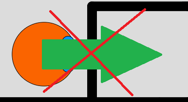
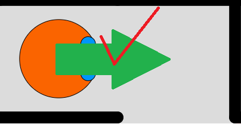

Gespielt werden kann sowohl mit den Pfeiltasten als auch mit ASDW.
Dabei ist die Blickrichtung des Läufers egal. Durch drücken der jeweiligen Tasten kann der Läufer bewegt werden, jedoch nur zwischen Feldern, welche nicht durch Mauern voneinander getrennt sind.


Ziel eines Labyrinthes
Das Zeil eines Labyrinthes ist es dies zu Lösen, indem man vom Startfeld zum Zielfeld kommt. Dabei kommt es grundsätzlich nicht auf die Dauer oder die Schritte an, die benötigt werden um es zu Lösen, sondern eher dass man es lösen kann. Geübte Spieler können dann auf Schrittzahl und Zeit achten, die sie verwenden um es zu Lösen und können dies dann auch, wenn man angemeldet ist, mit vorangegangenen Spielen und den Ergebnissen der eingestellten Lösungsverfahren vergleichen.
Lösungsverfahren
Zum Lösen eines Labyrinthes gibt es sehr viele Möglichkeiten, von denen wir 3 eingebaut haben. Zusätzlich gibt es die Möglichkeit das Labyrinth selbst zu Lösen. Zum Lösen eines Labyrinthes muss das Labyrinth zwischen Start und Ziel einen Pfad haben, auf dem er, ohne durch eine Mauer gehen zu müssen, das Zielfeld erreichen kann
Rechte Hand Verfahren
Das Recht Hand verfahren ist ein Lösungsverfahren, bei dem sich immer an der rechten Mauer orientiert wird. Dabei wird der Kontakt zur Mauer nie verloren, existiert jedoch am Startfeld keine Mauer umliegend, kann das Rechte Hand Verfahren keine Lösung erzielen.
Das Rechte Hand verfahren kann man sich ganz einfach Verdeutlichen, indem man sich vorstellt, man sei in einer Höhle und läuft immer mit der rechten Hand im Kontakt zur Wand.
Linke Hand Verfahren
Das Linke Hand Verfahren ist im Grunde wie das Rechte Hand Verfahren, nur richtet es sich danach, immer auf der Linken Seite eine Mauer zu haben.
Least Visited Verfahren
Das Least Visited Verfahren ist das komplexeste unserer Verfahren. Es orientiert sich nicht an den Mauern, wie die Hand Verfahren, sondern entscheidet zuerst nach der Anzahl der Besuche eines Feldes und anschließend wenn nötig nach Zufall, welchen Weg er nimmt. Jedoch gibt es für das betreten eines Feldes einige Bedingungen:
Die Anzahl der Besuche des Feldes welches der Läufer betreten will, ist kleiner als die der anderen umliegenden Felder, welche betreten werden können,
Zwischen den Feldern liegt keine Mauer,
Ist die niedrigste Anzahl von umliegenden Felder gleich, entscheidet der Zufall welches Feld betreten wird.
Nur Wenn alle diese Bedingungen eintreten, kann der Läufer sich bewegen.
Jedoch ist es möglich, dass der Läufer Wege nimmt, welche ihn wieder vom Zielfeld entfernen, da der Zufall entscheidet und es egal ist ob das Feld, auf welchem er sich befindet, näher am Ziel ist als das Feld, welches er besuchen möchte. Aber kein Grund zur Sorge, das Ziel findet er dennoch, insofern sich zwischen Start- und Zielfeld ein Pfad befindet, der nicht durch eine Mauer unterbrochen wird.
Optionen
Labyrinthoptionen
Das Labyrinth kann durch das öffnen der Einstellungen bearbeitet werden. Folgende Eigenschaften kann man bearbeiten:
Höhe und Breite
Start und Ziel
Warscheinlichkeit von Mauern
Zusätzlich gibt es die Möglichkeit selbst einzustellen durch welche Methoden das Labyrinth erstellt wird. Diese sind:
Generiert
Feld wird zufällig generiert und auf lösbarkeit geprüft
Maximale Größe: 40x40 Felder
Zufall
Feld wird zufällig generiert, kann jedoch unlösbar sein
Maximale Größe: 40x40 Felder
Selbst
Feld wird durch den Nutzer selbst erstellt
Nutzer setzt Mauern selbst
Maximale Größe: 20x20 Felder
Neben diesen Optionen gibt es auch festgelegte Schwierigkeitsgrade:
Einfach (10x10 Felder)
Mittel (15x15 Felder)
Schwer (20x20 Felder)
Alle diese Einstellungen erfordern das Neugenerieren des Labyrinthes.
Läuferoptionen
Für den Läufer gibt es nur folgende 3 Einstellungen:
Spur
Zeigt die Anzahl der Besuche pro Feld
Smart Mode
Effekt nur bei Handverfahren
Wenn ein Feld das 5.Mal besucht wird, bricht das Lösen ab.
Wenn Feld 5 mal besucht, kein Lösen in allen 4 Richtungen möglich.
Schritte pro Sekunde
Definiert die Anzahl Schritte pro Sekunde
Diese Einstellungen können Live geändert werden.
Hier wird Ihnen die Statistik zu dem derzeit generierten Labyrinth angezeigt. Dabei ist egal wie genau das Labyrinth aufgebaut ist. Es zählen die Rahmenbedingungen zum Labyrinth, wie Höhe, Breite und so weiter.
Lieber Nutzer, sie sind noch nicht angemeldet. Um Ihre Statistiken sehen zu können und um Ihr Profil zu Verwalten, müssen sie sich anmelden/registrieren.